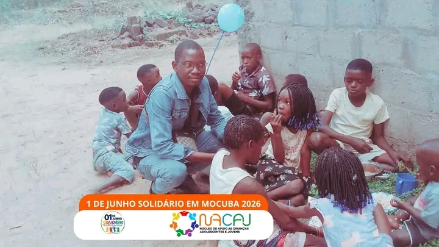

NACAJ LEVA ESPERANÇA E SORRISOS A CRIANÇAS VULNERÁVEIS NO 1 DE JUNHO EM MOCUBA
Enquanto muitas crianças celebravam o Dia Internacional da Criança nas escolas do distrito de Mocuba, participando de actividades recreativas e recebendo refeições especiais, outras enfrentavam uma realidade diferente, a falta de alimentos, roupas e condições básicas para participar das comemorações.
Sensibilizada com esta situação, a Associação NACAJ (Núcleo de Apoio às Crianças, Adolescentes e Jovens) promoveu uma acção solidária no bairro Bive, em Mocuba, oferecendo um almoço especial a mais de 30 crianças vulneráveis e órfãs da comunidade.
Embora o menu fosse simples, o gesto teve um significado profundo. A refeição servida transformou-se em momentos de felicidade, partilha e esperança, enchendo o ambiente de sorrisos e alegria. Para muitas dessas crianças, aquela foi uma oportunidade única de celebrar o seu dia com dignidade, carinho e atenção.
A iniciativa contou ainda com a participação de pais, mães e líderes comunitários, que manifestaram o seu reconhecimento e gratidão à NACAJ pelo impacto positivo da acção. Os presentes elogiaram o compromisso da associação com a promoção dos direitos humanos das crianças e apelaram para que o programa “1 de Junho Solidário” continue a ser realizado nos próximos anos.
Segundo o Coordenador Distrital da NACAJ em Mocuba, a organização alcançou plenamente a meta traçada para a data. O principal objectivo era garantir que crianças sem condições de se alimentarem adequadamente nas escolas ou em suas próprias casas pudessem desfrutar de uma refeição digna e celebrar o Dia da Criança com alegria.
“Foi emocionante ver de perto os sorrisos das crianças e a satisfação das mães. Conseguimos cumprir a nossa missão e demonstrar que pequenos gestos podem gerar grandes transformações na vida de quem mais precisa”, destacou o coordenador.
A acção reforça o compromisso da NACAJ com a protecção, inclusão e promoção do bem-estar das crianças, adolescente.
@NACAJ-MOÇAMBIQUE